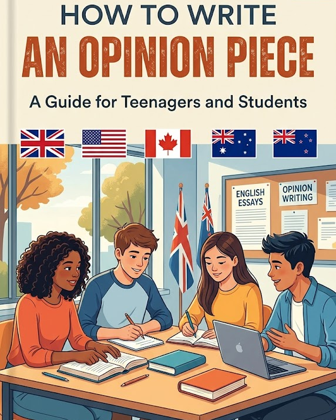

Writing an Opinion Piece

How to write an opinion piece 📝
An opinion piece can be divided into 3 parts.
- Introduction
- Main body / Argument
- Conclusion
Introduction
In the introduction, you should include:
- A line introducing the topic. Some examples include:
- The topic of … has been widely discussed in recent years.
- In recent years, there has been a lot of debate about …
- Nowadays, many people have different opinions about …
- … has become an important issue in modern society.
Then briefly state your opinion:
- I believe…
- In my opinion…
- From my perspective…
Main Body / Argument
In this section, include your main argument(s). Provide examples or evidence to support your opinion.
- A study found that 80% of students…
- For example, Facebook has over 2 billion daily users…
Finally, in the conclusion, summarise your opinion. You can use:
- Finally…
- In summary…
- To sum up…
- At the end of the day…
Writing an opinion piece ✍️
Your turn!
Write a short opinion piece (100–120 words) about:
- Are social media influencers good role models?
Include:
- At least 2 phrasal verbs
- At least 3 modal verbs
Let’s get started!